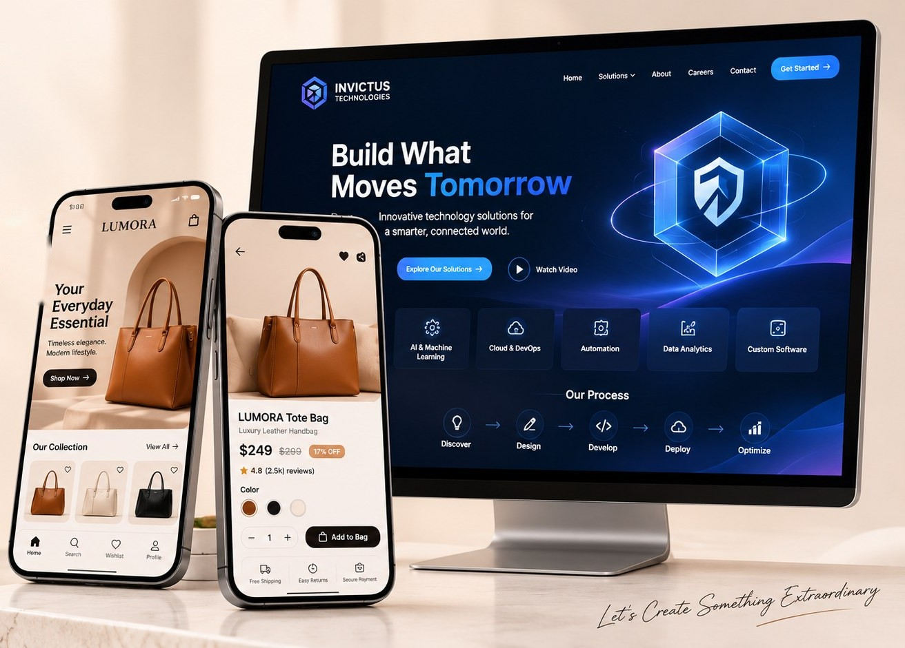

⌕
Discover
Clarify the problem, audience, constraints and what success should mean.
UI/UX DESIGN · VISUAL STORYTELLING
I turn complex ideas into intuitive, considered interfaces — combining a visual designer’s eye with a user-first approach to digital products.

SELECTED WORK / 2024—2026
A collection of product concepts and visual design explorations. Each project is an opportunity to make information clearer, journeys smoother and interfaces more useful.
ⓘ The product projects above are concept explorations unless explicitly identified otherwise. Mockup visuals are presentation artwork; they do not imply a live product or measured business results.
A LITTLE ABOUT ME
I'm Mothagapriya Sankaran, a UI/UX and visual designer with a background in graphic design and digital marketing creative. I enjoy bringing structure to complex information and shaping it into experiences that feel clear, cohesive and human.
My practice spans interface design, responsive websites, design systems, branding and polished visual presentations. I value curiosity, thoughtful details and design decisions that have a clear reason behind them.
HOW I WORK
A flexible process that balances discovery, clear structure, visual craft and validation — scaled to the needs of each project.
Clarify the problem, audience, constraints and what success should mean.
Map key journeys, prioritize information and establish a clear structure.
Explore wireframes, visual directions, reusable components and prototypes.
Review usability, improve the details and prepare clear handoff materials.
HAVE A GOOD CHALLENGE?
Open to UI/UX opportunities, collaborations and thoughtful freelance projects.
Start a conversation ↗